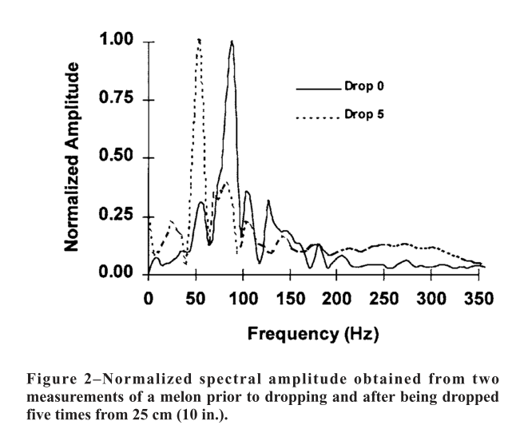

如何挑西瓜：一个学物理的吃货的感言
西瓜是一种很甜美的食物。当然，做为一个学物理的吃货，我一定不会白白浪费西瓜的。所以，本文的宗旨是，如何在不破坏西瓜的前提下，了解西瓜的甜美程度。
西瓜的生物学基础知识
西瓜是不是好吃，基本上是由含糖量决定的。而溶液的含糖量，这里的糖是指的我们能够吃出甜味的糖，例如葡糖糖，果糖。当然西瓜本身有大量的多糖——纤维素，这是西瓜细胞壁的主要成分，更是西瓜瓜瓤的主要成分。西瓜有大量的瓜瓤，可是我们吃纤维素，那是没什么口味的。幸运的是，西瓜成熟的时候，纤维素被纤维素酶降解了，瓜瓤被破坏，细胞就成了散沙一样。同时，这些被纤维素被降解，有了我们甜甜的葡萄糖。
西瓜的物理特性
我们关心的是西瓜的力学性质和声学性质，所以只需要考虑一组量就可以了，那就是弹性模量。
有了弹性模量，我们可以得到几乎所有西瓜本身的力学和声学性质。
所以现阶段想要通过力学和声学鉴定西瓜品质，一定要靠拢到弹性模量上来才靠谱。
而我们之前了解到，西瓜的成熟，西瓜的瓜瓤降解，葡萄糖的含量是相关的：西瓜成熟，意味着瓜瓤降解为葡糖糖。
瓜瓤降解是很关键的一点，因为瓜瓤降解改变了西瓜的结构，这会对西瓜的力学性质造成很大的影响。
当然这是理论上的，而实验上也确实有数据支持这一说法。
| 不熟 | 成熟 | |
|---|---|---|
| 密度 | 大 | 小 |
| 硬皮内侧弹性模量 | – | – |
| 瓜瓤最外层弹性模量 | 大 | 小 |
| 瓜瓤中间弹性模量 | 大 | 小 |
| 瓜瓤中心弹性模量 | 大 | 小 |
| 同样的西瓜共振基频 | 高 | 低 |
这些特性导致了相同品种、相同质量的西瓜，共振的频率不同，这样我们可以通过对照基频来挑西瓜，基频越小，西瓜越好。
等一下，西瓜越大，共振频率也越小。所以我们也要考虑西瓜的大小。以什么为标准呢？我们可以从振动方程中得出，西瓜的弹性模量
$E\propto f^2 m^{2/3}$，
而我们前面得知不熟和成熟的西瓜之间的的瓜瓤的弹性模量差别很大。并且，弹性模量是更加本质的一个物理量。所以我们就直接用 $f^2 m^{2/3}$ 来作为西瓜的质量标准。（说实话，这里 $f^2 m^{2/3}$ 并不是唯一的选择 [3] ，或许是一个更好的思路，因为我们并不确定弹性模量是不是最好的标杆，我们只是知道我们所知的物理量里面这个是最优的。）
弹性模量对于西瓜的振动模式的影响也可以直接看西瓜在一个初始的驱动下的振动演化。西瓜被敲击之后，振动发声，而这部分振动发声，会随时间演化，有个振动波形。
有一些论文是以这个为基础的。我们不是要自己想研究，而是要建立一个比较直观的物理感觉。所以直接取几张截图过来，我们感受一下：
这是对于一个正常西瓜的检测。正常意味着没有损坏，没有空心，没有蛀虫。
这样的西瓜的波形是比较漂亮的，对称性比较好。为什么对称性比较好呢，因为西瓜本身的对称性比较好，所以各个振动模式也比较漂亮。
我们比较关心功率谱，因为功率谱决定了我们听到的声音的音色和感受到的频率。功率谱在低频的时候，有几个比较明显的峰值。
这是一个空心西瓜的检测。这个波形好丑陋。对称性不好，因为西瓜本身可能因为空心变得不那么对称。不同振动的模式损失情况也比较特殊，与空心部分的形状大小有关。我们再看功率谱，原来正常的西瓜有一个明显的最高的峰值，现在变得不那么明显了。就是说，原来可能多少有点偏干瘪的音叉的感觉，现在变得是更加有和弦的感觉。
当然不是所有的实验都像这篇文章一样漂亮，有的实验会得到这样的结果 [4]

虽然看起来乱些，但是实质却是一样的，即，功率谱在低频阶段有几个标志性的峰值。这个文章没有非正常瓜的波形很频率谱对照，稍显可惜。
吃货的本质
学物理，难道不是为了吃上更好的西瓜么？
所以，喂，上面那个西瓜，哦不对，上面那个图表，
| 不熟 | 成熟 | |
|---|---|---|
| 密度 | 大 | 小 |
| 同样的西瓜共振基频 | 高 | 低 |
我们来看看我们人类的听力：

太棒了，上一部分我们看到的西瓜振动的功率谱中，几个比较大的峰值在 20Hz 之上了，所以我们可以分辨这几个峰值。听声辨西瓜，是可能的。
具体有什么规律呢？我们有张图来表示[5]

（请尽情的吐槽这张图的纵坐标。严格来说，即便我们这里只定性的用这张图，也不行。不过通过其他的文章可以得知，实际上这里的纵轴并不是一些很小的间隔，至少是能分辨的。）
所以，基于那一大串物理原理，我们得出这样的结论：
成熟的西瓜，敲击时的声音会比较沉闷。但是西瓜越大，声音也会越沉闷，所以要把西瓜的大小考虑进来。需要多多练习，才能很好的掌握这种方法。
摔了的西瓜不好吃
有时候我买了一个西瓜，是熟的，但是听声音也挺沉闷的，但是，这西瓜摔了，不好吃啊。
所以，我们能够通过声音辨别出西瓜是否摔过么？答案是，我不知道，或许有人能，但是原理上来看，很难。
Armstrong 等人曾经做过实验[6]，其中一个结果如下：

实线是指的一个原始的西瓜的功率谱，虚线是指的西瓜被从 25cm 的高度摔下来 5 次之后的功率谱。差别在于，摔了之后，西瓜的功率谱向低频移动了。这是一个很令人伤心的的结果，因为这样的话，我们就不能仅仅挑同一类西瓜里面的那些频率最低的那些了，因为这样可能会把摔过的西瓜挑出来。
或许，如果有人对某一类型的西瓜非常熟悉，可以准确的知道什么样的声音对应的是生瓜，什么样的对应的是摔过的瓜。这必定基于一些经验，和一幅好耳朵。
果壳的史军老师的结论
说了半天，这才是重点吧！


参考文献
- 王书茂, 籍俊杰, 焦群英 西瓜成熟度无损检验的冲击振动方法， 《农业工程学报》,1999, 15(3) 241 ↩
- Koro Kato, Electrical Density Sorting and Estimation of Soluble Solids Content of Watermelon， Journal of Agricultural Engineering Research, Volume 67, Issue 2, June 1997, Pages 161-170, ISSN 0021-8634. ↩
- Abbott, J.A., Affeldt, H.A., and Liljedahl. 1992. Firmness measurement of stored ‘delicious’ apples by sensory method, Magness-Taylor, and sonic propagation. Journal of the American Society for Horticultural Science 117:590. ↩
- M. L. Stone, P. R. Armstrong, X. Zhang, G. H. Brusewitz, D. D. Chen, Watermelon maturity determination in the field using acoustic impulse impedance techniques. American Society of Agriculture Engineering, 1996, 39(6) 2325. ↩
- Kouno, Y., Mizuno, T., Maeda, H. & Akinaga, T. Internal quality analysis of watermelons by an acoustic technique and its application in Japan. ACIAR PROCEEDINGS (1993) P392. ↩
- Armstrong, P. R., Stone, M. L. & Brusewitz, G. H. Nondestructive acoustic and compression measurements of watermelon for internal damage detection.Applied engineering in agriculture, 1997, 13, 641–645. ↩

说点儿什么好。。
呃
难得的理论联系实际的好文~
你好，这位科学家
你好。
绝对是冒牌吃货！！！昨天下午的会议，该作者剩下一大堆吃的。好像一个都没吃吧？
(⊙v⊙)嗯，吃货也有挑食的嘛~
碉堡
能研究下怎么泡到软妹子？
~
zz 如何挑西瓜：一个学物理的吃货的感言
吃货也得有文化
带回去慢慢看
应该写个西瓜生熟判断的应用
夏天到了…振动实验室又要派上用场了
貌似很高大上
赞
如何挑西瓜：一个学物理的吃货的感言
学有所用啊